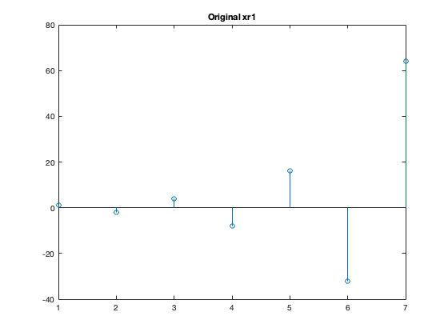
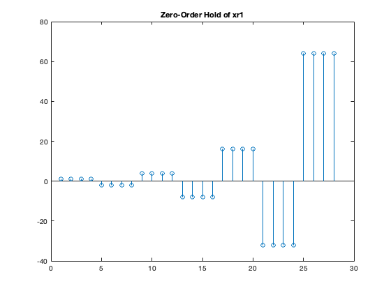
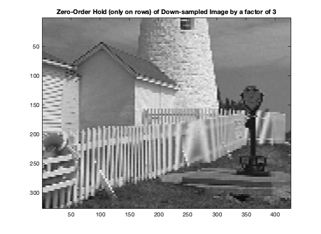
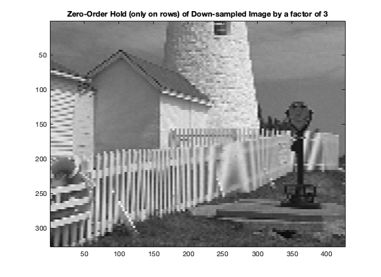
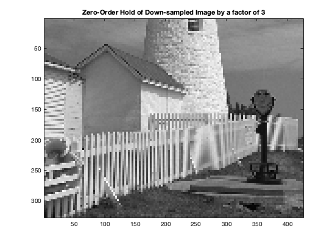
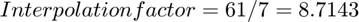
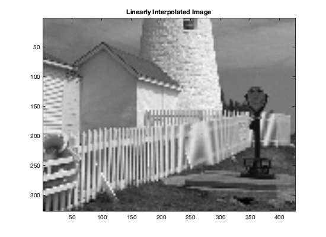

Contents
clc;clear;close all;
3 -- LAB EXERCISES: Sampling, Aliasing and Reconstruction
3.1 Down-Sampling
- (a) When you downsample the lighthouse image by a factor of 2, aliasing appears visually as distortions or artifacts that were not present in the original image. These distortions can be seen as repeated patterns or moiré effects in areas where there are fine details or high-frequency components. In the lighthouse image, the areas that show aliasing effects most dramatically are those with high spatial frequencies, such as the fence in the foreground or the bricks in the lighthouse structure. The fence, in particular, experiences a strong moiré effect, with the parallel lines appearing to merge and form new patterns in the downsampled image.
- (b) The aliasing in the lighthouse image can be explained by considering the frequency domain. The fence, for example, provides a spatial chirp where the spatial frequency increases from left to right. As we move towards the right side of the image, the spatial frequency of the fence approaches or exceeds the Nyquist frequency (half the sampling rate). According to the Sampling Theorem, a continuous signal can be accurately reconstructed from its samples if the sampling rate is at least twice the highest frequency present in the signal. When the spatial frequency of the features in the image exceeds the Nyquist frequency, aliasing occurs due to undersampling. By examining the fence, we can estimate the frequency of the features that are being aliased. If we count the number of fence posts in a small region of the image and divide by the width of that region in pixels, we can obtain an approximate value for the spatial frequency in cycles per pixel. This value can be compared to the Nyquist frequency to understand if the Sampling Theorem is being violated, resulting in aliasing. Zooming in on a small region of both the original and downsampled images can help visualize the aliasing effects and better understand the relationship between spatial frequency and the Sampling Theorem.
3.2 Reconstruction of Images
Part (a)
xr1 = (-2).^(0:6); L = length(xr1); nn = ceil((0.999:1:4*L)/4);% repeat each index four times xr1hold = xr1(nn); % Apply zero-order hold % Plot the original xr1 vector figure; stem(xr1); title('Original xr1'); % Plot the zero-order hold version of xr1 figure; stem(xr1hold); title('Zero-Order Hold of xr1'); 
Part (b)
% Load the image ww = load('lighthouse.mat'); xx = ww.xx; % Down-sample by a factor of 3 p = 3; xx3 = xx(1:p:end, 1:p:end);
Now, we need to apply zero-order hold to all rows of the down-sampled image xx3 with an interpolation factor of 3. We will use the same method as in part (a) but apply it to each row of the image.
First, we create the indexing vector for zero-order hold with an interpolation factor of 3
rows = size(xx3, 1);
cols = size(xx3, 2);
nn_rows = ceil((0.999:1:3*rows)/3);
nn_cols = ceil((0.999:1:3*cols)/3);
% Apply zero-order hold to all rows of the down-sampled image
xholdrows = xx3(nn_rows, :);
Now, we will display the down-sampled image xx3 and the zero-order hold version xholdrows to compare their sizes and content.
% Display the down-sampled image figure; xx3_resized = imresize(xx3, size(xx)); show_img(xx3_resized, 1, 1); title('Down-sampled Image by a factor of 3'); % Display the zero-order hold version of the down-sampled image xholdrows_resized = imresize(xholdrows, size(xx)); figure; show_img(xholdrows_resized, 2, 1); title('Zero-Order Hold (only on rows) of Down-sampled Image by a factor of 3');
Image being scaled so that min value is 0 and max value is 255 Image being scaled so that min value is 0 and max value is 255
 
 Part (c) Apply zero-order hold to all columns of the down-sampled and row-zeroholded image
xhold = xholdrows(:, nn_cols);
figure;
show_img(xhold, 3, 1);
title('Zero-Order Hold of Down-sampled Image by a factor of 3');
Image being scaled so that min value is 0 and max value is 255
Part (d)
To find the interpolation factor when converting `xr1` to `xr1linear`, we need to look at the ratio of the number of points in the interpolated signal `xr1linear` to the number of points in the original signal `xr1`. The original signal `xr1` has 7 points (0 to 6), and the interpolated signal `xr1linear` has points from 0 to 6 with a step size of 0.1. Therefore, `xr1linear` has 61 points (0, 0.1, 0.2, ..., 6).
The interpolation factor is calculated as:

In this case:

So, the interpolation factor when converting `xr1` to `xr1linear` is approximately 8.71.
Part (e)
To perform linear interpolation on both the rows and columns of the down-sampled image `xx3`, we will use the `interp1` function twice. First, we will interpolate the rows, then the columns. The resulting image will be called `xxlinear`. Here's the code:
% Perform linear interpolation on rows xx3_rows = interp1(1:size(xx3, 1), xx3, linspace(1, size(xx3, 1), size(xx, 1))); % Perform linear interpolation on columns xxlinear = interp1(1:size(xx3_rows, 2), xx3_rows', linspace(1, size(xx3_rows, 2), size(xx, 2)))'; % Display the resulting image figure; show_img(xxlinear, 7, 1); title('Linearly Interpolated Image');
Image being scaled so that min value is 0 and max value is 255
The code above first interpolates the rows of the down-sampled image `xx3` using `interp1` and stores the result in `xx3_rows`. Then, it interpolates the columns of `xx3_rows` using `interp1` on the transposed matrix and stores the result in `xxlinear`. Finally, it displays the linearly interpolated image `xxlinear`.
Part (f)
Visually, the reconstructed image appears to be smoother than the downsampled image. However, when compared to the original image, we can observe some blurriness and loss of sharpness in the reconstructed image. Some of the details in the original image may also be lost in the reconstruction process. The reconstruction process does not remove the aliasing effects completely. Although the reconstructed image appears smoother than the downsampled image, we can still see some aliasing effects in the image, especially in areas with high frequency content. Zooming in on specific regions may reveal more details about the aliasing effects.
Part (g)
In order to compare the quality of the linear interpolation result to the zero-order hold result, we can analyze regions of the images with different local frequency content. In general, regions with high frequency content (such as edges) are more challenging to interpolate accurately, while regions with low frequency content (such as smooth backgrounds) can be reconstructed more easily.
Looking at the lighthouse image, we can see that the edges of the image (such as the boundary between the sky and sea, or the fence posts) contain high frequency content, while the smoother regions (such as the sky or the water) contain low frequency content.
In the zero-order hold interpolation, we are essentially replicating the nearest neighbor value to fill in the missing pixels. This can lead to blocky artifacts in regions with high frequency content, as the replication of the nearest value does not accurately capture the shape of the original signal. This can be seen in the downsampled image and the zero-order hold reconstruction, particularly in the fence posts where there are noticeable blocky artifacts. On the other hand, linear interpolation attempts to estimate the value of the missing pixels based on the surrounding pixels, and can result in smoother and more accurate reconstructions. However, in regions with high frequency content, the linear interpolation may introduce artifacts due to the difficulty in accurately estimating the signal's shape.
We can see the differences in the quality of the two interpolations by comparing the reconstructed images to the original lighthouse image. In general, the linear interpolation produces a smoother and more visually appealing reconstruction compared to the zero-order hold interpolation. However, there are still noticeable artifacts in regions with high frequency content, particularly along edges such as the fence posts.
It is also worth noting that the zooming feature in MATLAB can introduce its own interpolation, likely a zero-order hold, which may affect the quality of the image when looking at small patches. Therefore, it is important to be mindful of this when using the zooming feature to analyze the reconstructed images.